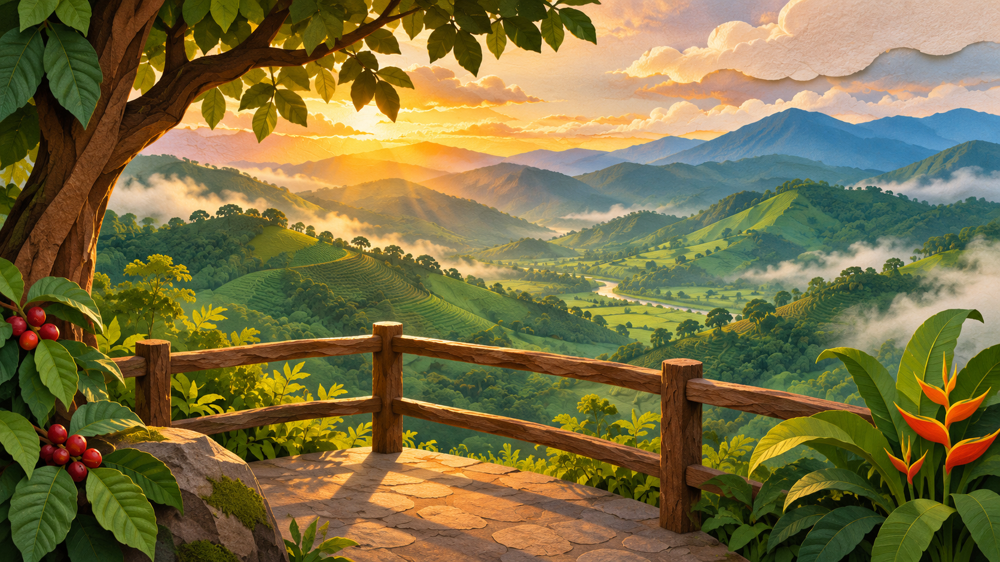

Parque Bruma Verde · Guía de rutas
El mirador
escondido.
Consulta el reporte del parque y elige un camino para abrir la postal del mirador.
Reporte pendiente

Postal desbloqueada
Llegaste al mirador.
Postal del Parque Bruma Verde.